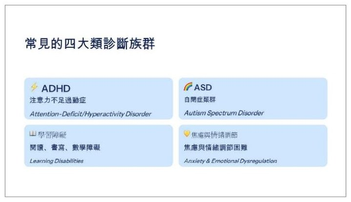
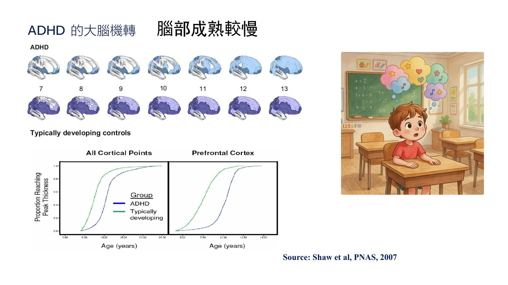
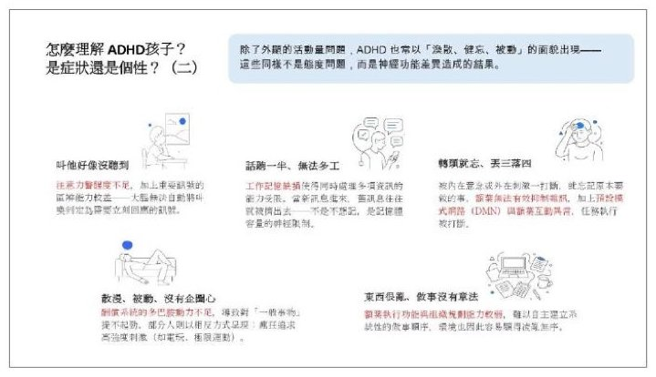
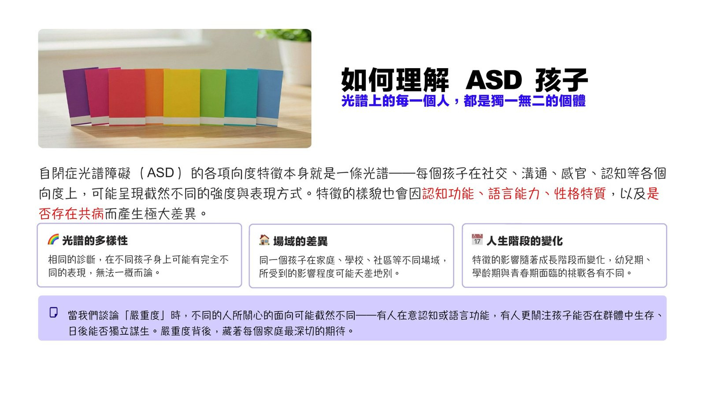
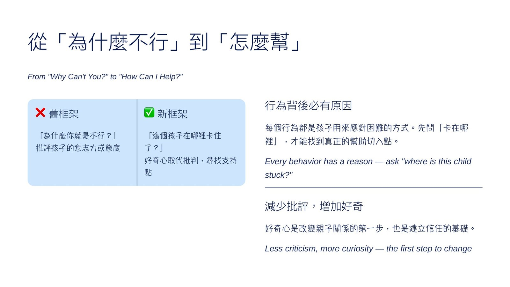

第 2 場・
理解家庭中神經多樣性兒童青少年
Understanding Children and Adolescent Neurodiversity in Home Environment
林育如醫師
亞東紀念醫院兒童發展中心主任
孩子的不聽話，背後常是神經調節困難，不是故意挑釁。
林育如醫師從門診談起：診斷不能只看一個測驗分數，要看孩子在不同場合、不同大人眼中的樣子。接著她依序講 ADHD、自閉症與學習障礙的神經機轉。為什麼叫不動、為什麼東西亂放、為什麼看起來像個性問題？她一再強調，這些困難不是意志力能控制的。
- 本場錄音自講者開講中途起，前段內容依投影片補述。
- 講者因時間到，家庭支持段落只以幾句話作結，投影片未逐頁展開。
重點整理
01診斷不是一個測驗分數

- 林育如從門診的診斷歷程談起：電腦化注意力測驗常出現正常值，和心理師實際觀察的落差很大。
- 明顯的個案在門診當下就能判斷，靠的是老師、家長與臨床三方觀察是否一致。
- 去疾病化的氛圍下，仍有孩子不吃藥就連職能治療與日常配合都難以進行。
有些小孩子不讓他吃藥；真的是舉步難行
02ADHD 的大腦慢一點成熟

- ADHD 的盛行率約 5-10% 且在上升，她歸因於都市化、3C 使用增加，以及大家的覺察變多。
- 老師因為有一整班可以對照，比較容易看出異常；家長家裡孩子少，缺少對照的基準。
- 她說 ADHD 孩子的額葉成熟時間可能比一般孩子晚 2 到 5 年，這是行為顯得幼稚的生理基礎。
- 症狀隨年齡有不同軌跡：有人持續、有人緩解，也有人到中高年級課業變重才浮現。
以前沒有ADHD嗎
03是症狀，不是個性

- 叫他好像沒聽到，多半是專注在別的事情上的選擇性失聰；她也說有些情況確實是故意的。
- 工作記憶不足讓孩子難以同時處理多件事，注意力一轉移，原本要做的事就被擠出去。
- 東西亂放不是懶，是沒有分類與收納的策略；她強調這是身體上的困難，不是意志力能控制。
- ADHD 大部分是天生遺傳、不是教養造成，早期辨識是為了減少挫敗累積成對自己的否定。
04自閉症是一道光譜

- 她指出自閉症的辨識率逐年上升，男女比約 4:1，並提到基因負荷較大的家族較常見。
- 成因以遺傳為主，既包含從父母那裡來的常見基因變異，也包含孩子自己出現的新生突變。
- 心智理論的困難讓孩子預設對方已經知道自己在想什麼，省略前因後果，對話容易對不上。
- 自閉症是一道光譜：從社交上偽裝得很好、成年後才被發現，到完全沒有口語的孩子都有。
它就是一個光譜
05學習障礙、焦慮與怎麼支持

- 對自閉症孩子，她建議事先預告、接納，把環境刺激弄單純，無傷大雅的固定習慣不必硬改。
- 學習障礙是智力正常、但在閱讀、書寫或數學上有特定困難，診斷主責在學校的特教系統。
- 醫療端主要處理合併的 ADHD，並以輔助策略繞過孩子卡住的地方。
- 她提到神經多樣性孩子合併焦慮憂鬱的比例約四到五成，焦慮常以拒學、身體不適或情緒爆發出現。
現場問答
本場無現場問答記錄。
帶走的一句
他們不是不好；是有困難；需要被我們支援